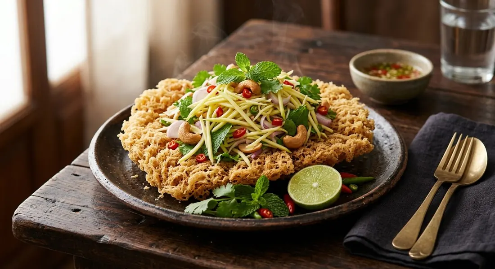

Catfish fried into a crisp golden raft, buried under sour mango, shallots and peanuts — crisp and hot under cold and sharp.

ยำปลาดุกฟู is the dish that turns the humblest Thai fish into something architectural. The grilled catfish is picked clean of skin and bone, pounded until its flesh fluffs apart, and — here's the trick every raft-school source shares — worked with a little oil until it turns creamy, then scattered into very hot oil, where it puffs and locks into a golden raft. TrueID's recipe explains the why: the oil in the meat is what keeps the flakes crisp long after they leave the pan.
The salad on top is the sharp half of the dish. Sour green mango shredded, shallots, chillies, and a lime-fish-sugar dressing poured over while the fish is still warm. Mahidol's institutional recipe calls the dish indispensable on a Thai table — spicy, sour, sweet and salty at once, and one of the country's favourite yams.
But there are two schools, and they look nothing alike. The raft school — Kapook, Phol, TrueID — pounds the meat and fries it into a crisp mat. The whole-fish school, in Mahidol's central Thai version, fluffs the flesh with a fork without tearing the skin and fries the fish whole, back down, until it's a single crisp fillet on the plate. Both get the same mango salad. Only the architecture differs.
| Thai | English | Amount |
|---|---|---|
| ปลาดุกฟู (the fish) | ||
| ปลาดุกย่าง | Grilled catfish | 2 |
| น้ำมันรำข้าว | Rice bran oil | for frying |
| น้ำยำ (the dressing) | ||
| น้ำปลา | Fish sauce | 1 tbsp |
| น้ำตาลทราย / น้ำตาลปี๊บ | Sugar / palm sugar | 1 tbsp / 1 tsp |
| น้ำมะนาว | Lime juice | 1 tbsp |
| พริกจินดา / กระเทียม | Jinda chillies / garlic | 4 sliced / 2 cloves |
| เครื่องยำ (the salad) | ||
| มะม่วงน้ำดอกไม้ดิบ | Green mango, shredded | 100 g |
| หอมแดง | Shallots, sliced | 3 |
| เม็ดมะม่วงหิมพานต์ | Cashews, fried | 50 g |
| ผักชี / สะระแหน่ | Coriander / mint | to garnish |
The classic home ratio (Kapook): 1 grilled catfish, a whole sour mango, shallots, roasted peanuts, mint — dressing pounded from chilli, garlic, fish sauce, lime and palm sugar. The old-school whole-fish version (Mahidol): 2 catfish fried whole, dressing of boiled vinegar-water-sugar with pounded coriander root, garlic and chillies stirred in after it cools.
Raft or whole fish. Kapook, Phol and TrueID pound the meat and fry it into a crisp mat; Mahidol's central Thai recipe keeps the skin, fluffs the flesh with a fork and fries the fish whole. Same dish, two presentations — the raft is the street version, the whole fish is the older table version.
Grill or steam the fish first. Everyone starts from grilled catfish except TrueID, who steams it over lemongrass. The grilled versions carry smoke; the steamed one is cleaner and lets the dressing lead.
Raw or cooked dressing. The raft school uses a raw lime-fish-sugar dressing. Mahidol boils vinegar, water, salt and sugar into a thin syrup and adds the pounded aromatics only after it cools — the old central Thai way.
Peanuts or cashews. Kapook, TrueID and Mahidol top with roasted peanuts; Phol's restaurant version uses fried cashews. It's the same crunch, but the cashews are the upgrade.
The sweetener. Palm sugar (Kapook), white + palm (Phol), plain syrup (TrueID), white sugar (Mahidol). Every dressing dissolves the sugar fully before the lime goes in — that part no source skips.
This recipe is translated from the following Thai-language sources. Where they disagree, we've said so.
1. Phol Food Mafia — "Crisp Catfish Flake Salad (ยำปลาดุกฟู)" (the recipe used here: measured, cashews, microwave dressing trick) — pholfoodmafia.com
2. Kapook — "ปลาดุกฟู เมนูยำแซ่บกรอบพร้อมวิธีทอดปลาให้ฟูเป็นแพสวย" (the classic home raft + breadcrumb alternative) — cooking.kapook.com
3. TrueID — "สูตรยำปลาดุกฟู น้ำยำเข้มข้น วิธีทำให้ปลากรอบนาน" (steamed school, oil-in-meat explanation) — food.trueid.net
4. Mahidol INMU — "ยำปลาดุกฟู" (central Thai whole-fish school, cooked dressing) — inmu.mahidol.ac.th
5. Krua Khun Toi (TV) — "ยำปลาดุกฟู" (5-catfish party version, salt-alum wash) — kruakhuntoi.com